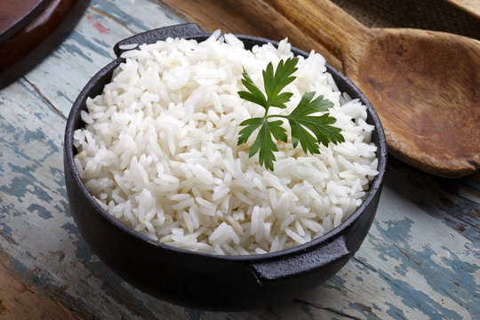

Rice Recipe

Description
Rice is a vegetarian dish that is often served in a variety of cuisines. It can be served in a variety of ways, including in a salad, in a bowl, in a dish, or in a meal.
Ingredients
- 1 cup rice
- 1/2 cup salt
- 2 cups of water
Cooking Instructions
- Wash the rice until the water runs clear
- Add the 2 cups of water to a pot and bring it to a boil
- Add the salt and the drained rice
- After a couple of minutes lower the heat and let the rice simmer
- If all the water evaporates remove the pot from the heat and fluff the rice
Home Page